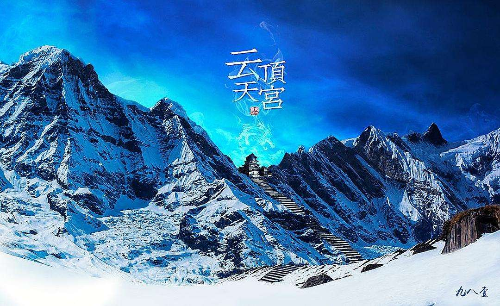

内容简介
明初的鬼手神匠汪藏海，设计建造的云顶天宫——那是一座无法用语言来描述的、漂浮在天上的宫殿。宫殿下方云雾缭绕，宫殿的建造者们站在地面上仰望着天空中那座不可思议的建筑。而在边上的一座山上，有一个道者正怡然自得地微笑。这个小小的双耳壶无法表达出这个工程的任何雄伟壮观之处，但是张起灵还是感到了一阵无法抑制的激动，因为他知道他找到了什么东西。云顶天宫坐落在长白山深处，被层层白雪覆盖，是汪藏海倾尽毕生心血的巅峰之作，也是整个《盗墓笔记》系列中最宏大、最神秘的墓葬之一。
人物介绍
吴邪
吴家传人，老九门之后。看似柔弱书生，实则心思缜密、坚韧不拔。在云顶天宫篇中，他经历了人生中最痛苦的抉择，亲眼目睹同伴的牺牲，也第一次真正触及了"终极秘密"的边缘。他的成长在这次探险中达到了新的高度。
张起灵（小哥）
张家最后的守门人，身手超凡，沉默寡言。他在云顶天宫中展现了对青铜门的执念，仿佛那里有他一直在追寻的答案。当青铜门缓缓开启的那一刻，他毫不犹豫地走了进去，将所有谜团留在了身后。
王胖子
吴邪的铁杆兄弟，大大咧咧却又粗中有细。在雪山绝境中，他用幽默化解恐惧，用义气撑起同伴的希望。他是团队中不可或缺的气氛担当，也是关键时刻最可靠的战友。
陈皮阿四
老九门第四门传人，狠辣果决，老谋深算。他此次前来云顶天宫，为的是万奴王墓中的终极秘密。然而命运弄人，他终究没能走出这座雪山，在青铜门前留下了最后的执念。
阿宁
裘德考的得力干练，冷酷高效的女强人。她在团队中扮演着亦敌亦友的角色，带领着自己的队伍与吴邪一行人同行。在雪山中的并肩作战，让彼此之间的关系变得微妙而复杂。
裘德考
神秘的海外势力代表，对云顶天宫的秘密觊觎已久。他通过阿宁遥控指挥，布下了一盘跨越数十年的大棋。
剧情分析
长白山集结
各路人马齐聚长白山脚下，目标直指传说中的云顶天宫。吴邪、王胖子与陈皮阿四的队伍汇合，阿宁也带着裘德考的人马一同出发。暴风雪即将来临，所有人都知道这将是一条不归路。
雪山跋涉
漫天的白雪铺天盖地，狭窄雪域中的跋涉令人窒息。队伍在暴风雪中艰难前行，每一步都可能是最后一步。冰冷的风雪中，有人开始出现幻觉，有人体力不支倒下。吴邪咬紧牙关，他知道一旦停下来就再也站不起来了。
陈皮阿四之死
这是整个篇章中最令人心碎的时刻之一。陈皮阿四，这位纵横江湖数十年的老前辈，在接近青铜门的路上耗尽了最后的力气。他那双曾经翻云覆雨的手缓缓垂下，眼中的光芒渐渐熄灭。临终前，他望向远方那若隐若现的宫殿轮廓，嘴唇微动，却再也说不出一个字。吴邪跪在雪地里，看着这位亦敌亦友的老人永远闭上了眼睛，泪水在寒风中瞬间结冰。
发现云顶天宫
穿过重重险阻，众人终于目睹了云顶天宫的真容。那座漂浮在云雾之上的宫殿群落，金碧辉煌又透着诡异的气息。巨大的青铜建筑群在白雪映衬下散发着幽幽的青光，仿佛来自另一个时空。汪藏海的设计天才在这里展现得淋漓尽致，每一处细节都暗藏玄机。
墓中奇观
进入宫殿后，众人看到了闻所未闻的奇景。诡异的壁画讲述着万奴王的传奇，精巧的机关暗道考验着每一个人的智慧。墙壁上刻画着神秘的符号，仿佛在诉说着一个跨越千年的秘密。吴邪用手电筒扫过那些古老的纹饰，心跳不由自主地加速。
张起灵的抉择
当那扇巨大的青铜门出现在眼前时，所有人的呼吸都停滞了。门上刻满了古老的符文，散发着令人心悸的气息。张起灵静静地站在门前，他的眼神中有着前所未有的坚定。吴邪想要阻止他，但小哥只是轻轻摇了摇头，然后缓缓推开了那扇沉重的青铜门。门后是一片无尽的黑暗，张起灵毫不犹豫地踏入其中，身影瞬间被黑暗吞没。那扇门在他身后缓缓关闭，将所有的秘密和吴邪的呼喊声一起锁在了里面。
万奴王之墓
云顶天宫的核心区域是万奴王的陵墓。这位传说中的帝王，据说是第一个掌握长生不老之术的人。墓室中的陪葬品价值连城，但真正的宝藏并非金银珠宝，而是那些记录着长生秘密的古老典籍。每一卷竹简都承载着令人疯狂的信息，让在场的所有人都陷入了深深的震撼之中。
青铜门后的世界
青铜门背后的世界，相当于一个平行于现实的空间，就像虫洞一样。当你进入青铜门，你就会回到过去重新生活——这就是为什么张家人永远不老。张家世代守护云顶天宫轮回的秘密，就是因为这个长生的方法并不完整。古往今来，崇拜长生的人很多，但张家不知道长生的代价究竟是什么。
汪藏海的遗产
吴邪在云顶天宫中找到了六百多年前汪藏海试图留给后人的终极秘密。然而这个秘密在地底巨大的青铜门之前戛然而止。汪藏海的主线到了这里停止了，铁面生的主线重新开始。吴邪意识到，他所追寻的一切，不过是更大谜团中的一小块拼图而已。
深度解析
长生的秘密
云顶天宫最大的秘密，一个被很多人认可的解释是：长生不老的秘密隐藏在青铜门的背后，而尸蟞王则被包裹在青铜陨石的碎片中，让人服下，然后人们进入青铜陨石睡觉，等2000年后尸蟞王被青铜陨石杀死后，人将获得永生的能力。三叔也说过青铜门后面是万物的终极，是旧生活的结束、新生活的到来。张家之所以能活得更久，其实是因为他们改变了自己的轮回。
张家的使命
张家世代守护青铜门，不仅是为了保护长生的秘密，更是为了维持世界的平衡。如果云顶天宫的秘密泄露，会引起世界混乱。这也是张家宁可牺牲自己也要守护秘密的原因。张起灵走进青铜门，正是为了延续这份守护，用自己的生命去换取世人的安宁。
吴邪的成长
云顶天宫篇是吴邪成长历程中最重要的转折点。他从一个被命运推着走的普通人，逐渐变成了愿意主动承担责任的人。亲眼目睹陈皮阿四的死亡、张起灵的离去，让他明白了有些东西比生命更重要。这一篇之后的吴邪，已经不再是那个只会在笔记本上画闷油瓶的天真少年了。
综合分析
主题解读
云顶天宫篇探讨了长生与牺牲、执念与放下、命运与选择等深刻主题。每个人来到这里都有自己的目的——有人追求长生，有人寻找真相，有人只是跟随同伴。但最终，所有人都必须面对同一个问题：为了真相，你愿意付出多大的代价？
叙事手法
南派三叔在这一篇中运用了大量的环境描写来烘托氛围。漫天飞雪、刺骨寒风、幽暗墓室，每一个场景都让读者身临其境。而人物之间的对话则克制而有力，尤其是张起灵走进青铜门前与吴邪的那场无言告别，成为了整个系列中最经典的场景之一。
系列地位
云顶天宫篇在整个《盗墓笔记》系列中占据着承上启下的关键地位。它不仅揭开了汪藏海主线的部分真相，也为后续的蛇沼鬼城、阴山古楼等篇章埋下了伏笔。这一篇是理解整个系列终极秘密的必经之路，也是吴邪从"被动探索"转向"主动追寻"的分水岭。
